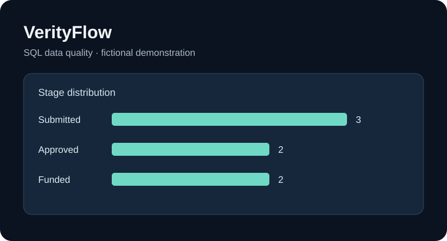
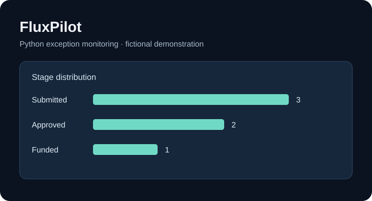

Agentic AI · Manufacturing · Evaluation
ChangeGuard MFG

Reconciles engineering changes against fictional BOM, inventory, purchasing, WIP and quality evidence. Proposes READY/HOLD decisions for human review, with reproducible evaluation cases.
I combine ERP and inventory operations experience with software QA and hands-on projects in AI-assisted manufacturing review, voice agents, security triage, and data-quality automation. Explore working demos, test evidence, architecture notes, and the limitations of each prototype.
Independent projects and demonstrations. Start with ChangeGuard or Vanessa for applied AI, or explore operations, quality, and security workflows below. Synthetic examples are not presented as production outcomes.
Reconciles engineering changes against fictional BOM, inventory, purchasing, WIP and quality evidence. Proposes READY/HOLD decisions for human review, with reproducible evaluation cases.
A full-stack voice AI prototype with a React dashboard, Express API endpoints, Vapi integration, and model-guided conversation flow. Documents setup, security, and compliance limitations.
Interactive fulfillment exception dashboard with explainable risk priority, search, and review-to-resolution workflow. Uses fictional orders and browser-local state.
Defensive SOC training prototype for suspicious-login triage, MFA/access-control findings, analyst escalation, and automated Python tests using synthetic events.

SQL data-quality and reporting prototype that detects exceptions in fictional operations records and explains management reporting definitions.

Configurable feed-validation tool with duplicate and missing-field checks, exception outputs, automated tests, and a reproducible synthetic scenario.
Support-triage prototype with transparent case prioritization, ownership, notes, and status tracking. Uses synthetic cases.
Rule-based IT controls workbench using synthetic ERP evidence to review privileged access, segregation of duties, and change approvals. No live LLM connected.
Inventory and ERP operations support in a manufacturing environment. Investigate job-order and material transaction discrepancies, support cycle counts and audits, and coordinate with purchasing, engineering, receiving and production.
Georgia State University — Bachelor of Interdisciplinary Studies, Information Systems concentration. Perimeter College — Associate of Science, Computer Science.
Tools: Infor ERP, Excel, SQL, Python, SQLite, GitHub, QA and testing fundamentals.
My case studies emphasize repeatable queries, transparent assumptions, data dictionaries, tests, and recommendations that a stakeholder can act on. Synthetic examples are not presented as real employer results.
For source code, reproducible demonstrations and project documentation, visit my GitHub profile.
github.com/Esoham ↗